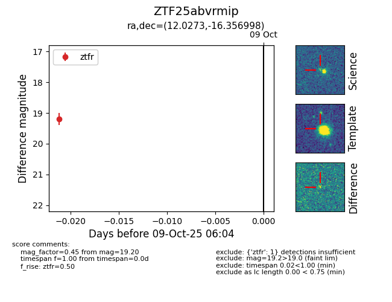

FINK: ZTF25abvrmip
Lasair: ZTF25abvrmip
ALeRCE: ZTF25abvrmip
ZTF25abvrmip (ztf,fink)
equatorial (ra, dec) = (12.0273,-16.35700)
galactic (l, b) = (118.6662,-79.20116)

last ztfr=19.20
1 ztfr detections